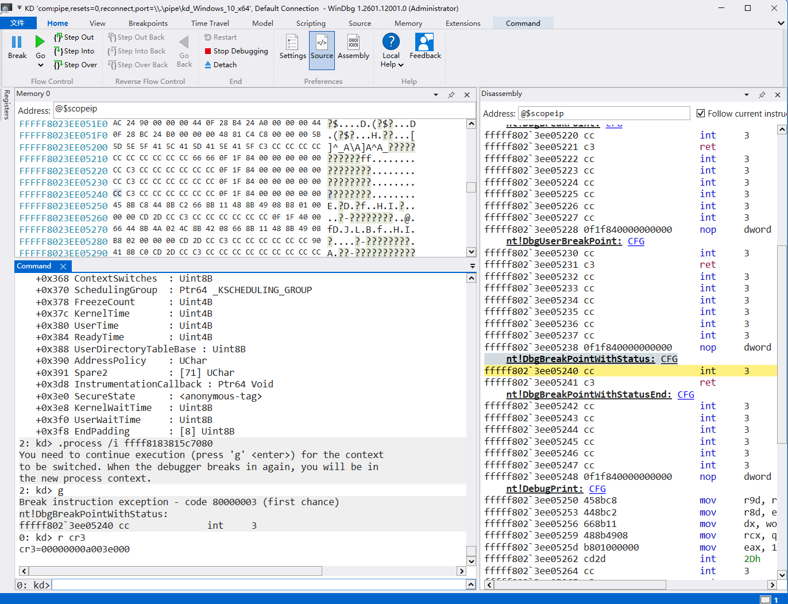
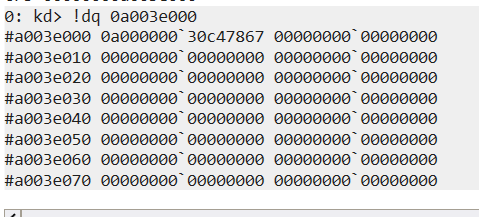
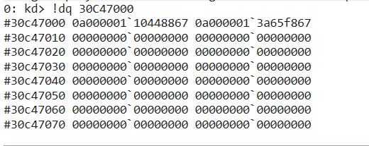
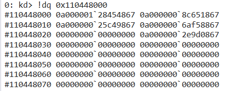
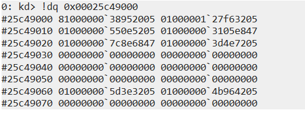
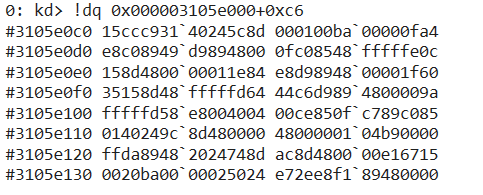

手动根据 VA(虚拟地址) 查找对应 PA(物理地址)
解题过程
先在虚拟机内用 IDA 动调 exe 并下断点使进程挂起，然后主机 WinDbg 调试，切换到对应进程上下文。

WinDbg 查找 CR3 的值为 00000000a003e000，也就是页表基址。
断点处指令虚拟地址为：0x00000000004030c6
根据公式计算对应的 index：
1 | PML4 = (VA >> 39) & 0x1ff |
得：
1 | PML4 = 0x0 |
直接查看页表基址（PA 物理地址）处的值：

因为 PML4 算出来是 0，所以直接取第一项 0a00000030c47867。
1 | 地址： |
页表项（PML4E / PDPTE / PDE / PTE）结构：
| 高位：物理地址 | 低 12 位：各种 flag |
|---|
也就是说：
1 | entry = [物理页基址 | 标志位] |
flag：
| 位 | 含义 |
|---|---|
| 0 | Present |
| 1 | RW |
| 2 | US |
| 3 | PWT |
| 4 | PCD |
| 5 | Accessed |
| 6 | Dirty（PTE） |
| 7 | PS（大页标志） |
| 8 | Global |
| 9-11 | 其他 |
继续跟进：

PDPT 同样为 0，取第一项 entry -> 0x0a00000110448867，再次取物理地址 -> 0x110448000。

PD = 2，所以取第三项 0a00000025c49867，再计算出物理地址 -> 0x00025c49000。

PT = 3，取第四项，计算物理地址为 0x000003105e000。又因为 OFFSET = 0xC6，所以直接查看 0x000003105e000 + 0xC6 处内存。

对比内存可以确定找到了正确的物理地址。
（软件断点会替换目标地址的第一个字节为 0xCC）